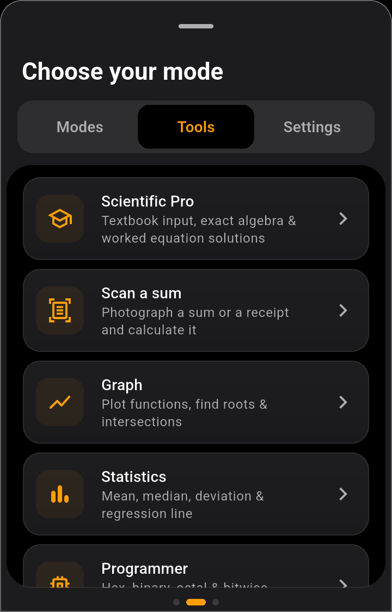

All of these tools are free. Open the mode icon at the top right of the calculator, then swipe to the Tools tab.

The tools on the Tools tab. Tap one to open it.
📷 Scan a sum: photograph a sum or a receipt
Open Scan a sum.
Choose Take photo (camera), Gallery (a photo you already have) or Type a sum (type it yourself).
Check the numbers it read. Choose the number style: 1.234,56 (Indonesian, dots for thousands) or 1,234.56. On an Indonesian receipt, 25.000 means twenty-five thousand.
Tap Use in calculator. The sum moves to the calculator; just press =.
PrivacyThe photo is read on your phone and is not sent anywhere. A photo taken with the camera is deleted once it has been read.
🎓 Scientific Pro: algebra and equations, step by step
Calculate: type a problem the way it looks in a textbook (stacked fractions, roots). Answers are exact, so √8 becomes 2√2.
Algebra: simplify, expand or factor an expression in one variable, x.
Solve: fill in the Left side and Right side of a linear or quadratic equation. The working is shown one step at a time.
Tap Save to Math Notes to keep the solution. It appears in Math Notes under Worked examples.
Choose Degrees or Radians for angles. Your choice is remembered.
📈 Graph: plotting functions
Type up to 4 functions, for example x^2 - 4 and 2x + 1.
Pinch to zoom, drag to move around, and tap the graph to trace a point on a line.
Roots, y-intercepts and the points where graphs cross are marked automatically.
📊 Statistics
One list of numbers (separated by commas): mean, median, standard deviation, quartiles and more.
x,y pairs: the regression (trend) line and its equation.
More tools
Tool
What it does
Programmer
Hexadecimal, binary, octal and decimal at once, plus bit operators (AND, OR, XOR, shifts).
Date & Time
Days between two dates, age, a date plus some days or months, and adding up hours worked.
Matrix
Determinant, inverse and systems of equations up to 6×6. Fractions stay fractions, never rounded.
Complex numbers
Calculate with i, in ordinary or polar form.
Growth chart
How savings grow, or a loan shrinks, year by year, as a chart and a table.
Answers as fractionsOn the Settings tab, turn on Answers as fractions to make the ordinary calculator show 1/3 instead of 0.333….